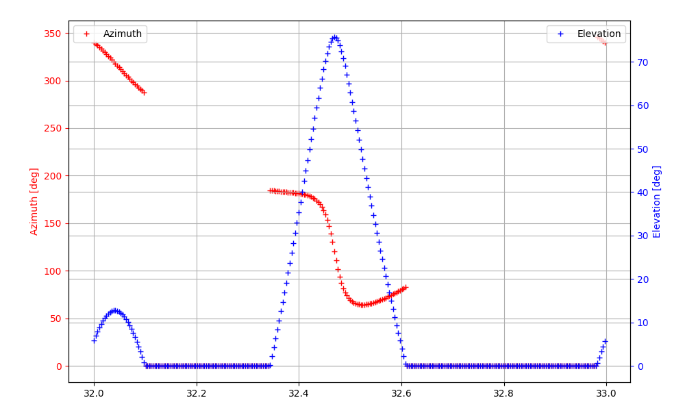
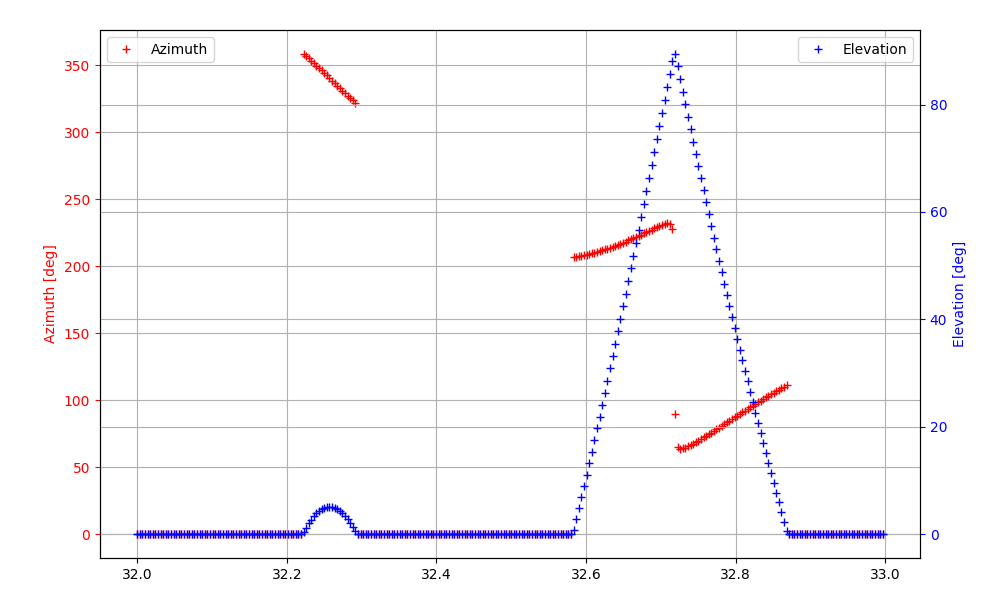
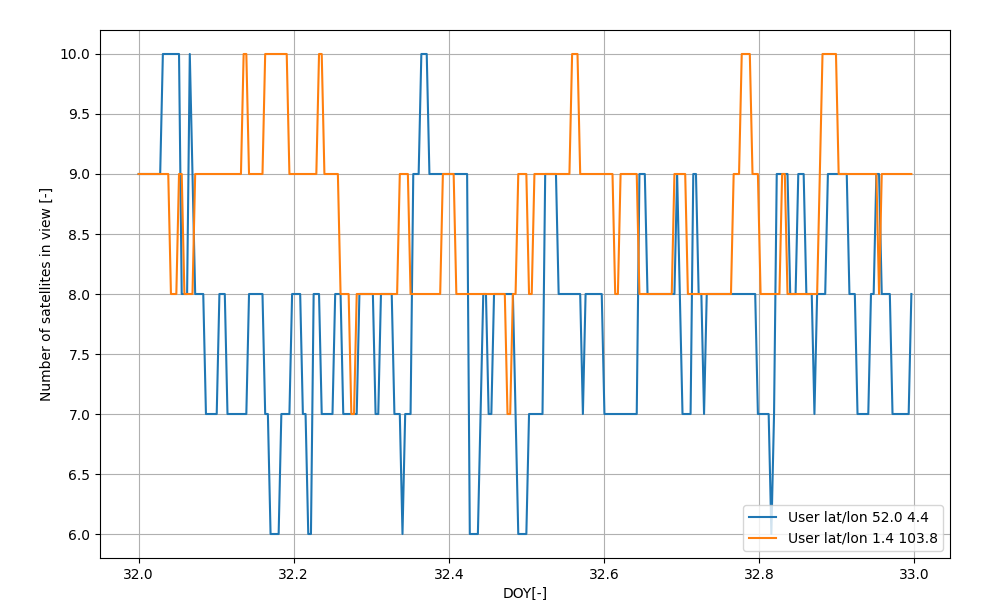

| Scenario | C:\Users\Michel Tossaint\OneDrive - ESA\Documents\86 - Ipython Notebooks\SatSVS\tests\multi_analysis\Config.xml |
| Window | 2026-02-01 00:00:00 to 2026-02-02 00:00:00 UTC, step 300 s (288 epochs) |
| Propagator | Keplerian |
| Segments | 24 satellite(s), 1 ground station(s), 2 user(s) |
| Analyses | cov_satellite_visible, cov_satellite_sky_angles, cov_satellite_sky_angles_2 |
| StartDate | 2026-02-01 00:00:00 |
| StopDate | 2026-02-02 00:00:00 |
| TimeStep | 300 |
| IncludeStation2SpaceLinks | True |
| IncludeUser2SpaceLinks | True |
| IncludeSpace2SpaceLinks | False |
| OrbitsFromPreviousRun | False |
| OrbitPropagator | Keplerian |
| Report | True |
| NumOfPlanes | 6 |
| NumOfSatellites | 24 |
| ConstellationID | 1 |
| ConstellationName | GPS |
| ReceiverConstellation | 1111 |
| SatelliteID | Plane | EpochMJD | SemiMajorAxis | Eccentricity | Inclination | RAAN | ArgOfPerigee | MeanAnomaly |
| 1 | 1 | 49169 | 26561750 | 0.00 | 55.00 | 272.847 | 0.00 | 11.676 |
| 2 | 1 | 49169 | 26561750 | 0.00 | 55.00 | 272.847 | 0.00 | 41.806 |
| 3 | 1 | 49169 | 26561750 | 0.00 | 55.00 | 272.847 | 0.00 | 161.786 |
| 4 | 1 | 49169 | 26561750 | 0.00 | 55.00 | 272.847 | 0.00 | 268.126 |
| 5 | 2 | 49169 | 26561750 | 0.00 | 55.00 | 332.847 | 0.00 | 80.956 |
| 6 | 2 | 49169 | 26561750 | 0.00 | 55.00 | 332.847 | 0.00 | 173.336 |
| 7 | 2 | 49169 | 26561750 | 0.00 | 55.00 | 332.847 | 0.00 | 204.376 |
| 8 | 2 | 49169 | 26561750 | 0.00 | 55.00 | 332.847 | 0.00 | 309.976 |
| 9 | 3 | 49169 | 26561750 | 0.00 | 55.00 | 32.847 | 0.00 | 111.876 |
| 10 | 3 | 49169 | 26561750 | 0.00 | 55.00 | 32.847 | 0.00 | 241.556 |
| 11 | 3 | 49169 | 26561750 | 0.00 | 55.00 | 32.847 | 0.00 | 339.666 |
| 12 | 3 | 49169 | 26561750 | 0.00 | 55.00 | 32.847 | 0.00 | 11.796 |
| 13 | 4 | 49169 | 26561750 | 0.00 | 55.00 | 92.847 | 0.00 | 135.226 |
| 14 | 4 | 49169 | 26561750 | 0.00 | 55.00 | 92.847 | 0.00 | 167.356 |
| 15 | 4 | 49169 | 26561750 | 0.00 | 55.00 | 92.847 | 0.00 | 265.446 |
| 16 | 4 | 49169 | 26561750 | 0.00 | 55.00 | 92.847 | 0.00 | 35.156 |
| 17 | 5 | 49169 | 26561750 | 0.00 | 55.00 | 152.847 | 0.00 | 197.046 |
| 18 | 5 | 49169 | 26561750 | 0.00 | 55.00 | 152.847 | 0.00 | 302.596 |
| 19 | 5 | 49169 | 26561750 | 0.00 | 55.00 | 152.847 | 0.00 | 333.686 |
| 20 | 5 | 49169 | 26561750 | 0.00 | 55.00 | 152.847 | 0.00 | 66.066 |
| 21 | 6 | 49169 | 26561750 | 0.00 | 55.00 | 212.847 | 0.00 | 238.886 |
| 22 | 6 | 49169 | 26561750 | 0.00 | 55.00 | 212.847 | 0.00 | 345.226 |
| 23 | 6 | 49169 | 26561750 | 0.00 | 55.00 | 212.847 | 0.00 | 105.206 |
| 24 | 6 | 49169 | 26561750 | 0.00 | 55.00 | 212.847 | 0.00 | 135.346 |
| Type | ConstellationID | GroundStationID | GroundStationName | Latitude | Longitude | Height | ReceiverConstellation | ElevationMask |
| Downlink | 1 | 1 | Kourou | 5.25 | -52.8 | 0 | 1 | 5 |
| Type | Latitude | Longitude | Height | ReceiverConstellation | ElevationMask |
| Static | 52.0 | 4.36 | 0 | 1 | 5 |
| Static | 1.35 | 103.82 | 0 | 1 | 5 |
| ConstellationID | 1 |
| SatelliteID | 1 |

| ConstellationID | 1 |
| SatelliteID | 7 |

